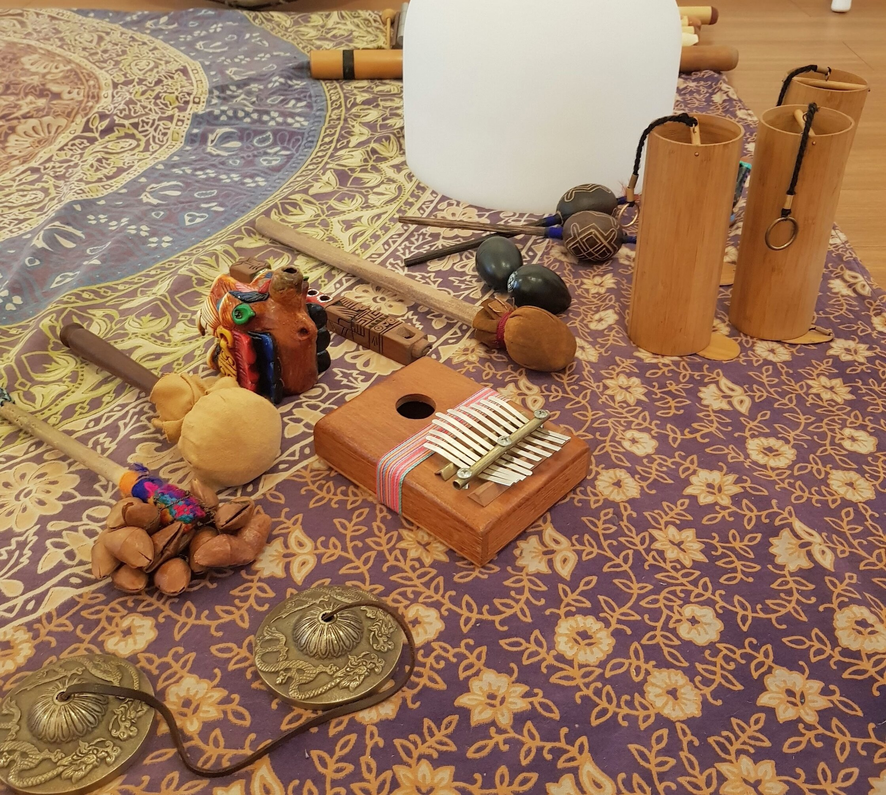

El yoga infantil debe estar constantemente nutriéndose de nuevos recursos para así ofrecer una experiencias integral y atractiva para niños y niñas.
En anteriores artículos hemos propuesto ideas de cómo poder integrar el reciclaje, la plástica y los cuentos para enriquecer nuestras prácticas y las posibilidades de aprendizaje tanto para la infancia como para nosotros/as en nuestro rol de facilitadoras/es.
Esta vez, será el turno de la música, visualizada como un recurso de acompañamiento a nuestras clases de yoga infantil.
Hay una variedad inmensa de instrumentos que pueden acompañar tu práctica para potenciar los objetivos a alcanzar.
¿Qué instrumentos musicales podemos utilizar?
Para momentos de relajación, mientras los niños y niñas descansan en savasana (postura del cadáver), puedes acompañar esta instancia con alguno de los instrumentos que encontrarás a continuación.
- Palo de agua
- Tingshas
- Triángulo
- Pin armonizador
- Kalimba
- Flauta
- Xilófono
- Harmónica
- Cuenco o Tazón Tibetano
Ejemplo: Si vas a guiar la relajación de tus niños y niñas por medio de una visualización, puedes ocupar una que invoque al elementos agua y así utilizar el palo de agua en determinados momentos de tu narración. Lo mismo puedes hacer, si en el mismo relato aparece el elemento aire, compartiendo el sonido de la flauta.
Para dar dinamismo a tus juegos, para marcar tiempos y para hacer de tus actividades algo mucho más entretenido, te sugiero alguno de estos instrumentos.
- Tambor chamánico
- Pandero
- Claves
- Maracas
- Matraca
- Cabasa
- Bongó
Ejemplo: Para tus juegos de asanas, puedes utilizar las claves al momento de mantener una postura y que juntos/as cuenten un determinado número. Esto se vuelve más dinámico y fortaleces al mismo tiempo la concentración, al realizarlo con un instrumento.